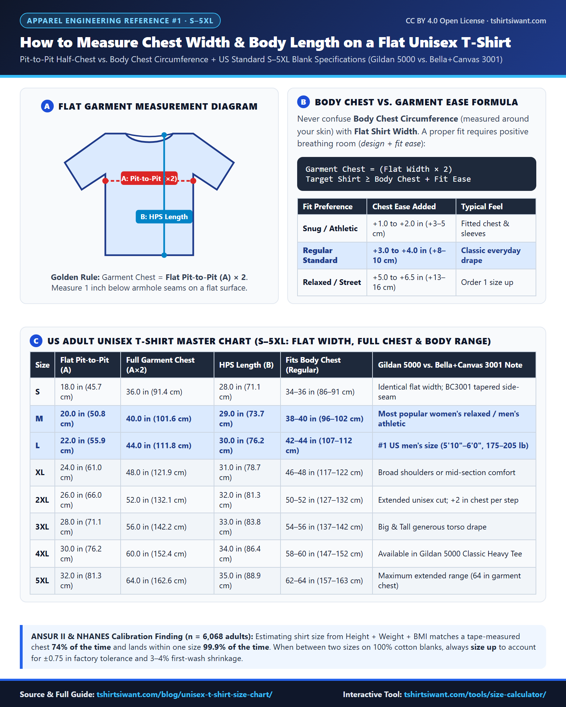
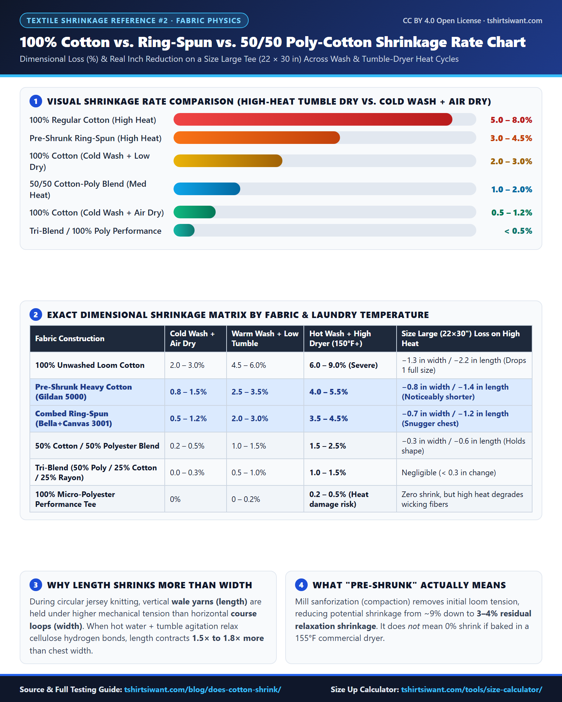
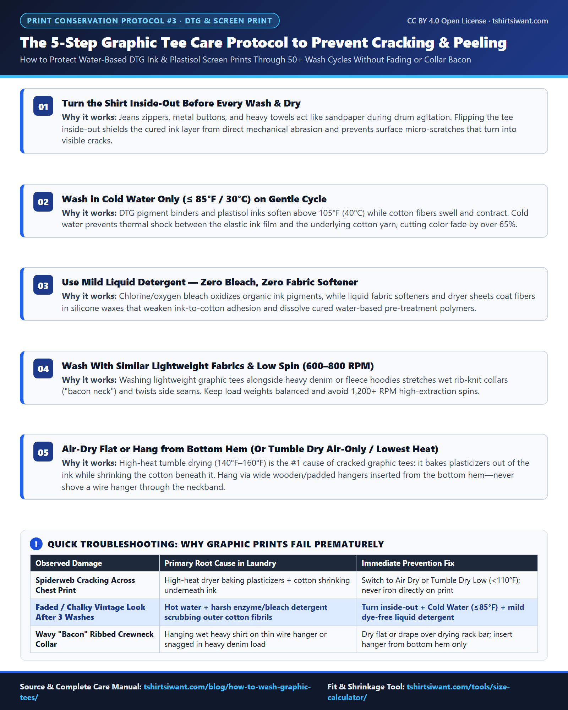
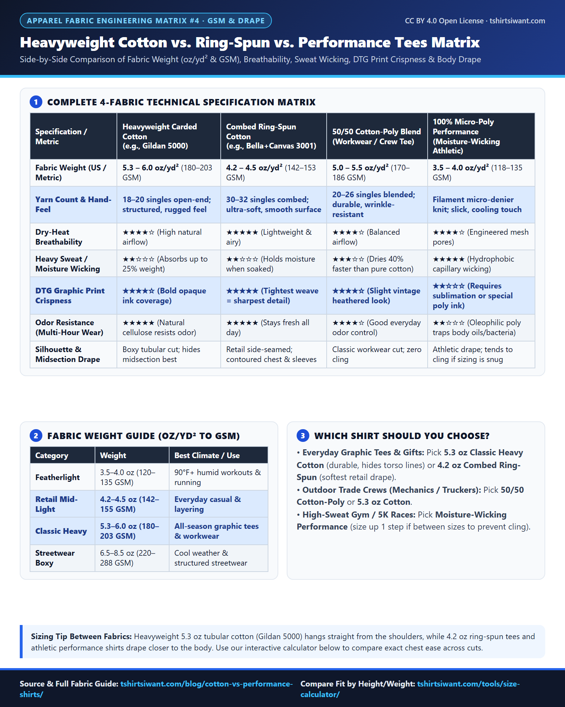

1. How to Measure Chest Width & Body Length on a Flat Unisex T-Shirt (S–5XL Visual Guide)
Compares flat pit-to-pit half-chest width (A) vs. body chest circumference and High Point Shoulder (HPS) length (B) across US adult sizes S through 5XL for Gildan 5000 and Bella+Canvas 3001 blanks.
Primary Source Guide: US Unisex T-Shirt Size Chart (S–5XL) ·
Interactive Tool: T-Shirt Size Calculator

2. 100% Cotton vs. Ring-Spun vs. 50/50 Poly-Cotton Shrinkage Rate Chart (By Wash & Dryer Heat)
Side-by-side dimensional shrinkage rates (%) and real inch loss on a Large (22×30 in) T-shirt across cold wash + air dry, warm wash + low tumble, and hot wash + high commercial dryer cycles.
Primary Source Guide: Does Cotton Shrink? Complete T-Shirt Shrinkage Guide

3. The 5-Step Graphic Tee Care Protocol to Prevent DTG & Screen Print Cracking & Peeling
Conservation workflow for water-based Direct-to-Garment (DTG) pigment ink and plastisol screen prints to prevent spiderweb cracking, pigment oxidation, and wavy collar deformation.
Primary Source Guide: How to Wash Graphic Tees Without Cracking or Fading

4. Heavyweight Cotton vs. Combed Ring-Spun vs. Moisture-Wicking Performance Tees Matrix
Technical matrix comparing 5.3–6.0 oz/yd² Heavyweight Cotton, 4.2 oz/yd² Combed Ring-Spun Cotton, 50/50 Workwear Blends, and 3.8 oz/yd² Moisture-Wicking Polyester across GSM, breathability, sweat wicking, print crispness, and drape.
Primary Source Guide: Cotton vs. Performance Shirts: Breathability & Fit Comparison
